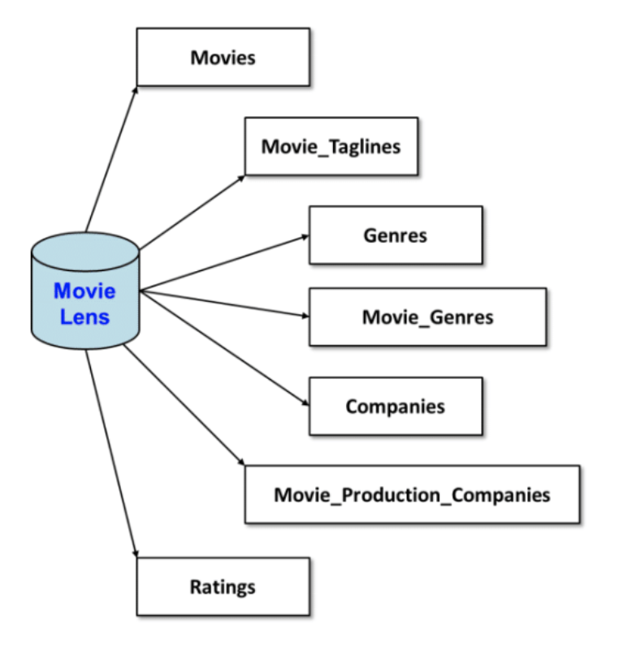

Recently, I've been working a lot with relational databases. Specifically, I've been tinkering with and learning about how to best integrate Python with SQLite3 to interact with relational database systems. So, I decided to put it to the test!
I decided to work with a database called 'MovieLens,' whose structure is rather similar to the picture to the right. There are 7 tables in total, each with distinct information on various movies in the database.
I created six distinct commands using Python, SQL, and a datatier.py file created by my professor, Joe Hummel, to play with the database a bit.

the commands
The commands I implemented were labeled 1 through 6. They are as follows:
- Command 1: Outputs the number of movies and the number of reviews in the database.
- Command 2: Here, you input the movie name and the program outputs the ID, title, and year of release for movies with similar or the same title as your input. If more than 20 movies match your input, the first 20 will be displayed initially, then you will be prompted to display more results if you so wish.
- Command 3: Here, you input a movie ID (ex. 603) and the program outputs detailed information about that movie (title, tagline, revenue, budget, release year, etc.)
- Command 4: Here, you input 'N' (the number of movies you want outputted) as well as the minimum number of reviews for the movies in your results. The program outputs the top N movies with at least that the minimum number of reviews (in descending order by average rating)
- Command 5: Here, you can look up movies by genre. The program returns a list of movie IDs and titles in ascending order by movie ID. Like in Command 2, you have the option to display multiple pages of results (in batches of 20 movies at a time).
- Command 6: Here, you input a movie ID and review, and the program inserts that review into the database.